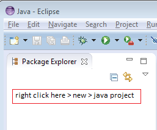
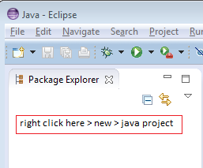
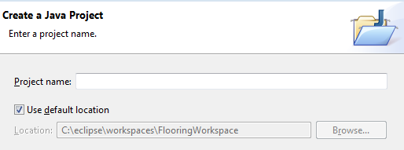
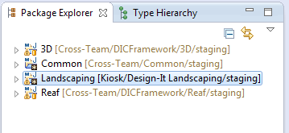

Eclipse
An IDE we use to code and run our Java applications. Visual Studio 6 is used to code and run our C++ applicaitons. Eventually we hope to move all our applications into a Java environment.
Highlights
- Maven (plugin)
- All our Java apps are built using the Maven plugin. In eclipse, we convert our java projects into a maven environment and doing that requires us to include a POM file (Maven requirement) for each application
- Eclipse can be opened in multiple windows hosting a new workspace per application, so you can open more than one application workspace at a time without having to close another application.
Setup for opening each new app inside eclipse
- Set up your workspace first by using Git Client to get the necessary files into your local computer first
- Once you have all the necessary files of a particular Java application, you can start importing the application workspace into the eclipse project one by one
 

- Project name should match each folder in your workspace (that is after you used SVN to get the folders) 
- As soon as you finish typing each folder name in your workspace, eclipse should auto detect that specific folder

- Click finish each time you import a project into eclipse and repeat steps 1-3 until you get something similar to step 5
- Here is an example of the complete Landscaping app in eclipse
- 
- Last step is to ensure each java project has been converted to maven, first by checking if the icon has a "M" in the icon -- if not, right click and convert to maven project
Java version control
Keep in mind your eclipse workspace has a java version target. While your Java project itself has its own java version target. When running, your java project will define it's own java version environment to run on and not from the workspace java version.
Syntax Coloring
You can choose different themes in eclipse to have text syntax show up in different colors. The best way to export the syntax coloring setting to another workspace is to go into the .metadata folder of the project.
- {workspace}/.metadata/.plugins/org.eclipse.core.runtime/.settings/*.prefs into my other workspace.
- These are the two files you want to copy over as they contain the settings.
- org.eclipse.jdt.ui.prefs = Syntax Coloring
- org.eclipse.ui.editors.prefs = Text Editors
Shortcut Keys
SEARCH |
||
| KEYS | SEARCH BY | WHERE |
| Ctrl + Shft + R | File Name, XML, Java, etc | Workspace |
| F3 (highlight method) | Jump To Class Declaration | Workspace |
| Ctrl + Shft + H | Class | Workspace |
| Ctrl + Shft + T (highlight method) | Method is used | Class |
| Ctrl + O | Method | Class |
| Ctrl + H | Advance Text | Custom |
| Ctrl + Alt + H (highlight word) | Method is used | Workspace | Debug / Run / Junit / Test / Mode |
| Shft + Alt + D -- J | Run Debug Java App | Class |
| Shft + Alt + D -- T | Run Debug Junit | class |
| Shft + Alt + X -- J | Run Java App | |
| Shft + Alt + X -- T | Run Junit | |
| F11 | Start Debug Mode | |
| F5 | Step Into | |
| F6 | Step Over | |
| F7 | Step Return | |
| F8 | Resume | |
TIPS | ||
| Ctrl + Shft + divide NumPad | collapse all codes | Class |
| ALT + Shf + O | on/off show code highlight occurence | |
| Ctrl + asterisk | uncollapse all codes | |
| Ctrl + Shft + C | Comment / UnComment selected codes | |
| Ctrl + Shft + P | Match End of Line | Class |
| Ctrl + Shft + O | Auto organize/include imports needed) | Class |
| Ctrl + pageUp/pageDown | navigate up and down tabs | workspace |
| Ctrl + M | enlarge and minimize code window | workspace |